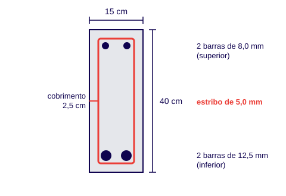

Dimensionar e levantar a ferragem de uma viga é a mesma coisa?
Não. Dimensionar é definir quanto aço a viga precisa para resistir aos esforços, e isso é trabalho exclusivo do engenheiro projetista. Levantar a ferragem, ou quantitativo, é apenas ler o detalhamento que você recebeu e somar comprimentos, quantidades e quilos das peças. Este guia trata apenas desse levantamento.
Quem monta ferragem recebe o projeto com a posição, a bitola e o espaçamento de cada barra. O seu cálculo não altera a segurança da estrutura: ele diz quanto aço comprar, cortar e cobrar.
Que dados do projeto eu preciso para calcular?
Você precisa de seis informações, todas no detalhamento da viga: a seção (largura × altura), o vão, as barras longitudinais, o estribo (bitola e espaçamento), o cobrimento e o tipo de gancho e ancoragem.
- Seção: largura × altura da viga, por exemplo 15 × 40 cm.
- Vão ou comprimento: distância a cobrir, mais o que a barra entra nos apoios.
- Barras longitudinais: quantidade e bitola, inferiores e superiores.
- Estribos: bitola e espaçamento (por exemplo 5,0 mm a cada 20 cm).
- Cobrimento: distância entre a face do concreto e o aço indicada no projeto (a título de exemplo, projetos costumam indicar 2,5 cm ou 3,0 cm).
- Ganchos e ancoragem: medidas de dobra das pontas, conforme o detalhamento.

Como calcular a quantidade de estribos de uma viga?
Divida o comprimento onde o espaçamento vale pelo espaçamento e some 1. Numa viga de 4,00 m com estribos a cada 20 cm: 400 ÷ 20 + 1 = 21 estribos. Arredonde sempre para cima.
Se o projeto muda o espaçamento perto dos apoios (mais estribos nas pontas, menos no meio), calcule cada trecho separadamente e some. O "+ 1" existe porque há um estribo em cada extremidade do trecho.
Qual o comprimento de cada estribo?
É o perímetro do estribo mais os ganchos. O estribo fica dentro do cobrimento: para uma viga 15 × 40 cm com cobrimento de 2,5 cm, ele mede 10 × 35 cm, ou 2 × (10 + 35) = 90 cm de perímetro. Somando dois ganchos de 5 cm, o comprimento reto de corte fica em torno de 100 cm.
Qual o tamanho comum do gancho do estribo?
O tamanho e o ângulo do gancho devem seguir o detalhamento do projeto que você recebeu. A título de exemplo em canteiros, costuma-se utilizar pontas em torno de 5 a 7 cm em estribos comuns.
Como converter o comprimento das barras em quilos de aço?
Multiplique o comprimento total (em metros) pelo peso por metro da bitola. O peso por metro do aço é aproximadamente o quadrado da bitola em milímetros vezes 0,00617. Uma barra de 10 mm pesa 10² × 0,00617 = 0,617 kg por metro.
Peso linear aproximado das bitolas mais usadas em vigas
| Bitola (mm) | Peso (kg/m) |
|---|---|
| 5,0 | 0,154 |
| 6,3 | 0,245 |
| 8,0 | 0,395 |
| 10,0 | 0,617 |
| 12,5 | 0,963 |
| 16,0 | 1,578 |
| 20,0 | 2,466 |
Os valores acima são os usuais de tabela para aço CA-50 e CA-60 (densidade de 7.850 kg/m³). Pequenas diferenças de arredondamento entre fornecedores são normais.
Como o sistema calcula o peso da viga sem risco de erro?
O SuperApp não dimensiona estruturas nem inventa armaduras — essa é uma responsabilidade exclusiva do engenheiro projetista. Você apenas informa as medidas das barras e estribos indicadas no projeto do cliente, e o sistema calcula instantaneamente os comprimentos de corte, o peso total e as listas de produção.
Cada viga possui requisitos específicos de carga, bitolas, ancoragens e espaçamentos definidos pelo cálculo estrutural. Fazer essas contas na mão ou adotar armações padronizadas gera desperdício ou risco de erro. No SuperApp Confisa, a fábrica apenas reproduz com rapidez e exatidão o que o projeto pede, automatizando a soma de quilos e a folha de corte para a bancada.
Quanto devo somar de perda no aço da viga?
Some a perda real da sua operação sobre o peso calculado. A perda vem de sobras de barra (o aço vem em barras de 12 m) e de erros de corte. Aproveitar as sobras em peças curtas, como estribos e ganchos, é o que mais a reduz.
Não existe um percentual único: ele depende do seu plano de corte e de quanto você reaproveita de retalho. Meça a perda de algumas obras e use a sua média. Veja como planejar o corte em como planejar o corte e a dobra de ferragem e como isso entra no preço em como fazer o orçamento de ferragem armada.
Dúvidas frequentes
Qual a fórmula do número de estribos?
Número de estribos = comprimento do trecho ÷ espaçamento + 1, arredondado para cima. Em 4,00 m com espaçamento de 20 cm são 21 estribos.
Qual o peso de uma barra de aço de 10 mm?
Cerca de 0,617 kg por metro. Uma barra comercial de 12 m pesa aproximadamente 7,4 kg.
O cobrimento entra no comprimento do estribo?
Sim. O estribo fica dentro do cobrimento, então cada lado da seção é reduzido em duas vezes o cobrimento antes de calcular o perímetro.